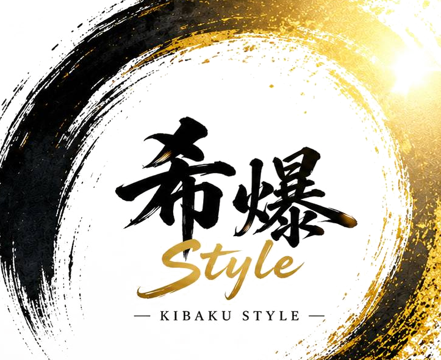

希望の成長OS ｜ KIBAKU STYLE

人は、変われる。 人は、育つ。 人は何度でも、再挑戦できる。
「希爆Style（きばくスタイル）」は、人間の無限の可能性を信じ、構造で引き出す——希望の成長OS。
― 思いを、構造に。 ―
その教室は、なぜ
静かに止まっていくのか。
40人学級。ひとりひとり違う認知特性。感覚過敏、衝動性、自己肯定感の揺らぎ、所属の不安——。「統制」で抑えようとするほど、先生のエネルギーは少数のトラブル対応に吸い込まれ、学級全体の成長は止まっていきます。誰も、悪くない。足りないのは努力でも才能でもなく、「人が動き出す構造」です。
足りないのは、人が動き出す構造だ。 ”
Chapter Two — 視点の転換
必要なのは、もっと強い「統制」ではない。
いま教室に必要なのは、
「自走する集団OS」だ。
統制
教師がひとりで回す。注意で抑える。エネルギーは少数に集中し、やがて限界が来て、学級全体の成長が止まる。
循環
構造と文化で回る。挑戦と承認が連鎖する。教師が抱え込まなくても、子どもたちが自ら育ち続ける。
——希望の成長OS。 ”
挑戦
失敗を恐れず、一歩を踏み出す勇気。動き出した瞬間から、成長は始まる。
承認
存在・努力・成長を認め合う文化。安心が、次の挑戦の土台になる。
再挑戦
失敗しても、何度でも立ち上がれるという確信。ここから希望が生まれる。
この3つが循環しはじめると、人は驚くほど成長しはじめます。
「能力」ではなく、
「状態（OS）」を見る。
同じ人でも、希望があるとき・意味を感じているときは動けます。比較・不信・失敗への恐れが強まると、動けなくなる。問題は“その人”ではなく、いまどんなOS（状態）が起動しているか。希爆Styleは、その状態を動かす「構造」を設計します。
Human OS
いまどんな状態か。なぜそうなっているかを“見える化”する。
希爆Style
状態を動かす変容の“構造（手順）”を設計する。
診断と処方がそろってこそ、人は変わる。
人は、こうして変わる。
OS（状態）
構造
行動
体験
振り返り
確信
OS更新
文化へ
変化は一気には起きません。体験の積み重ねが、新しいOSをインストールする。そして一人の変容が、やがて学級の「文化」になる。希爆Styleには、これを支える7つの成長サイクルが組み込まれています。
人を育てる、その現場へ。
希爆Styleが、授業・学級・組織それぞれの現場で提供していること。
主体性を育てる授業づくり
子どもが「自分で考え、選び、動き出す」授業を設計・実践。主体性を引き出す授業モデルを研究・発信します。
協働的な学びの研究
対話・協働・共創が生まれる学びのデザインを研究。一人ひとりのよさが生きる学級・授業づくりを支援します。
探究学習・総合学習の設計
問いを立て、探究し、社会とつながる学びをデザイン。学校全体で取り組めるプログラムを提供します。
AI時代に必要な「考える力」の育成
AIに代替されない「思考力・判断力・表現力」を育成。未来を生き抜く力を、教室から育てます。
学級経営の構造化
学級がまるごと回る「仕組み」と「関係づくり」を構築。どの子も安心して挑戦できる環境をつくります。
教師向けの発信・講演・研修
全国での講演・研修・ワークショップを実施。教師の挑戦と成長をサポートします。
挑戦と再挑戦を大切にした評価づくり
結果だけでなく「挑戦のプロセス」を価値づける評価を設計。何度でも立ち上がれる土台をつくります。
コミュニティ運営
教育に本気で向き合う仲間が集い、学び合う場を運営。日本中・世界中に“希望をつなぐコミュニティ”を広げます。
「一人ひとりの無限の可能性を信じ、輝かせる。
人が育つことで、社会が変わり、
世界はきっと良くなる。
その一歩を、あなたと一緒に。」
A person who proves the infinite possibility of human beings
佐野 伸之
人間の無限の可能性を証明する人 ／ 希爆Style 開発者 NOBUYUKI SANO
教育の現場のただ中で、一人の教育者として子どもたちと向き合いながら、「誰がやっても、人が育ち、希望が循環する」教育のOSを設計してきた。希爆Styleは、理屈ではなく“現場”から生まれた実践理論です。